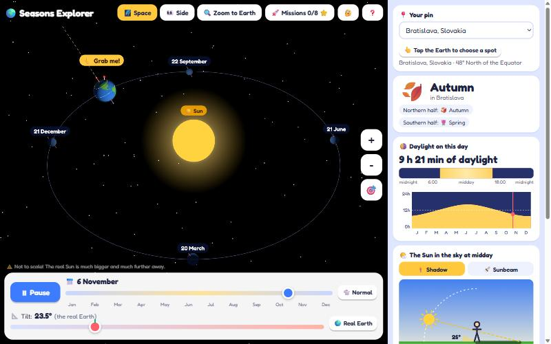
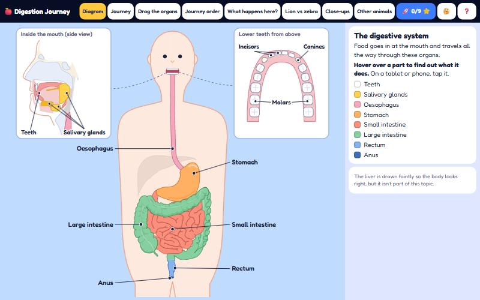
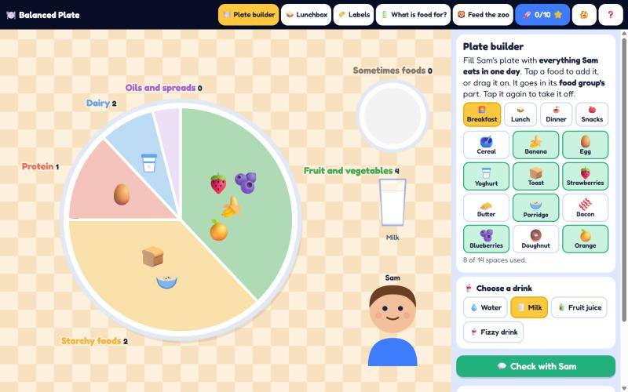
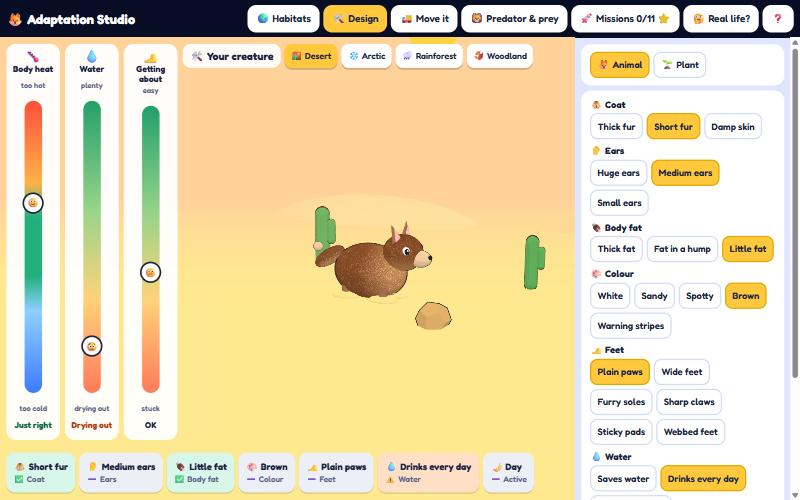
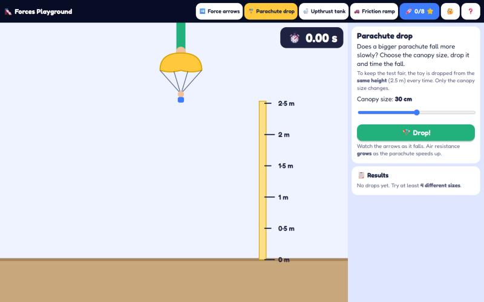
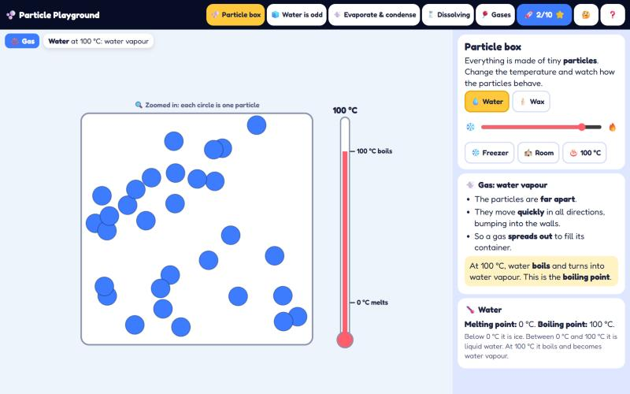
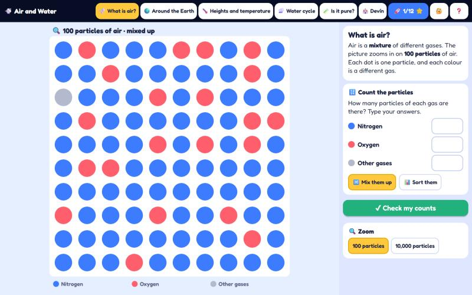
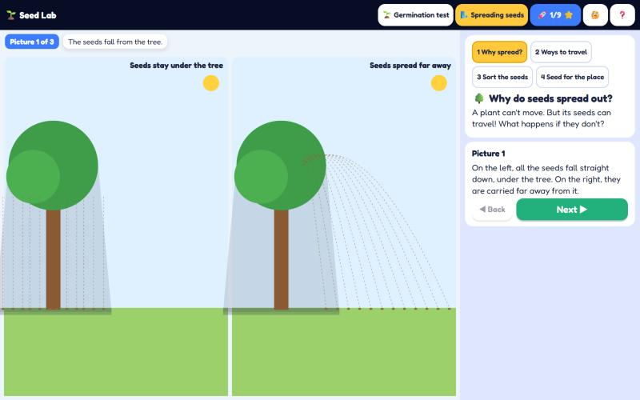
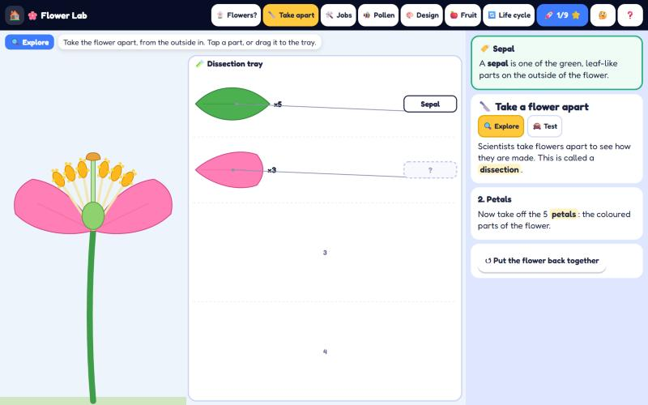
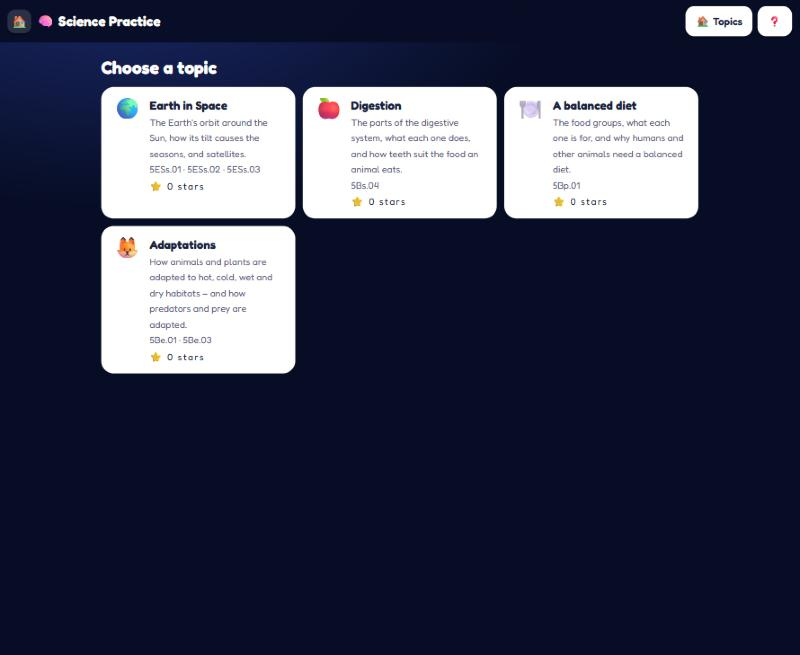

-
Earth and space

Seasons Explorer
🚀 8 missions · 5ESs.01–03
Spin the Earth around the Sun and find out why we have seasons.
-
Biology

-
Biology

Balanced Plate
🚀 10 missions · 5Bp.01
Fill Sam's plate, pack a lunchbox, read food labels and feed the zoo.
-
Biology

Adaptation Studio
🚀 11 missions · 5Be.01 · 5Be.03
Design a creature for the desert, the Arctic or the rainforest. Will it survive?
-
Physics

Forces Playground
🚀 8 missions · 5Pf.01–03
Draw force arrows, drop parachutes and test friction on a ramp.
-
Chemistry

Particle Playground
🚀 10 missions · 5Cm.01 · 5Cm.02 · 5Cc.01 · 5Cp.02
Heat it up, cool it down and watch the particles in solids, liquids and gases.
-
Earth and space

Air and Water
🚀 12 missions · 5ESp.01–03 · 5Cm.02 · 5ESc.01
Count the gases in air, climb through the atmosphere and follow the water cycle.
-
Biology

Seed Lab
🚀 10 missions · 5Bp.03 · 5Bp.04
Plan a fair test with bean seeds, watch a seed germinate and find out how seeds travel.
-
Biology

Flower Lab
🚀 9 missions · 5Bs.01 · 5Bs.02 · 5Bs.03 · 5Bp.02 · 5Bp.03 · 5Be.02
Take a flower apart, follow the pollen, design a flower for a pollinator and complete the life cycle.
-
All topics

Science Practice
Label, sort, match and order. Practise every topic and collect stars.